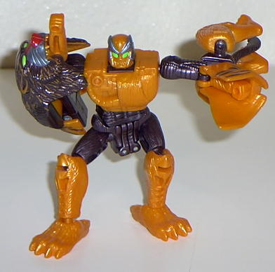

Bantor
Bantor

Allegiance
: Maximal
Size
: Basic
Difficulty of Transformation
: Easy
Color Scheme
: Orange, brown, light
brown, green, red, and silver-blue
Rating
: 5.9
Beast mode is a tiger
with a baboon face. A little unproportional: his front legs are twice as
large as his back legs. The mouth can move in this mode, but any movement
other than the "wide open" position makes it look like he has a hand handing
from his mouth. Still, no extras and pretty cool-looking, with nice detailing.
In robot mode, his front
legs become his legs, his back legs fold out to become his left hand, and
his face becomes his right hand. His left hand is very small, so it looks
like an appendage with a butt and two legs. His right hand is not much
better- basically a baboon face with a hand sticking out of it. Although
it can do a mean upper hook. The rest of the organic-looking robot mode
is pretty nice, with a well-molded robot head full of details.
A somewhat good fuzor,
but it isn't the first that I'd recommend.
Bantor Bio
:
FUNCTION: Jungle Warrior, Demolitions
Expert
Temperamental and solitary. Bantor relishes
his Fuzor animalian fusion. Enhanced by the attributes of a baboon's and
tiger's instincts, he is a natural warrior in total flux with the ways
of combat. Extremely versatile, Bantor combines the cunning patience of
a tiger with the near-demented frenzy of a baboon, deleting the need for
ammunition in close-range combat. Optimal Optimus' first choice for recon
demolition in missions. Bantor can traverse deep into Predacon territory
and escape undetected. Largely unknown by the enemy, his reputation for
setting undetectable traps exceeds his identity, though his power-ram head
and right hook are widely considered devastating.
Strength: 6.0
Speed: 6.0
Rank: 5.0
Firepower: 4.0
Intelligence: 9.0
Endurance: 7.0
Courage: 9.0
Skill: 8.0
Review by Beastbot
Back to Fuzors
Index